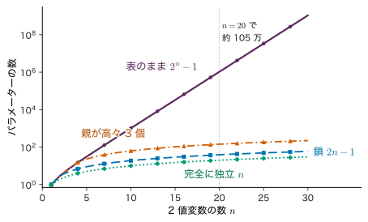
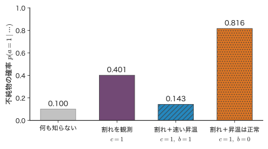
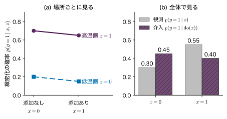
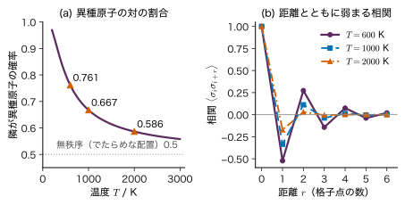

第19章グラフィカルモデル — 同時分布を図で分解する
- 2 値の変数が 20 個あると，同時分布の表は 100 万行を超える．どうすれば扱える大きさに分解できるか．
- 焼結体に割れが見つかり，昇温が速すぎたことも分かった．このとき「原料に不純物があった」確率は上がるのか，下がるのか．
- グラフの矢印は「原因 → 結果」を意味するのか．添加剤を入れた試料ほど緻密だったというデータから，「添加剤を入れれば緻密になる」と言ってよいか．
焼成温度，粒径，硬さ，検査の判定という 4 つの 2 値の量を考える．これらの同時分布を表で書くと $2^{4}=16$ 通りの組み合わせに確率を割り当てることになり，和が 1 という制約を除いても 15 個の数が要る．変数が 20 個なら $2^{20}-1=1\,048\,575$ 個である．ところが「温度は粒径を通してしか硬さに効かない」「判定は硬さだけで決まる」という知識を使うと，4 変数の場合は 7 個の数で足りる．20 変数でも，各変数が直前の 1 個にしか依存しなければ 39 個である．何が何に直接依存するかをグラフで描き，同時分布をグラフに沿った小さな因子の積に分解する．これが本章のグラフィカルモデル（graphical model）である．
本章では，まず矢印で依存を表す有向グラフ（Bayesian ネットワーク）を導入し，グラフから条件付き独立を読み取る規則（d 分離）を 3 つの基本形と数値例で確かめる．弁明効果（explaining away）という直観に反する現象もここで計算する．次に，これまでの章のモデル（ベイズ線形回帰，Gauss 混合モデル）と次の第VII部の隠れ Markov モデルをグラフで描き直す．続いて，向きのない無向グラフ（Markov 確率場）と，その例である Ising 模型，両者を同じ形に書く因子グラフを扱う．後半では，和の順序を入れ替えて周辺分布を効率よく計算するメッセージ伝播（message passing．sum-product 算法）と，最も確からしい組を求める max-sum を導く．最後に，矢印と因果関係の違い，観測と介入の違いを数値で示し，材料のプロセス–構造–特性の連鎖と合金のクラスター展開を本章の言葉で書き直す．
- 有向グラフから同時分布の分解 $p(\bm{x})=\prod_k p(x_k\mid\mathrm{pa}_k)$ を書き，パラメーターの数を数えられる．
- tail-to-tail，head-to-tail，head-to-head の 3 つの型で条件付き独立が成り立つかを，式と数値で確かめられる．d 分離でグラフから独立性を読み取れる．
- 弁明効果を手計算で示し，「結果で条件付けると原因どうしが従属になる」ことを説明できる．
- プレート表記で，ベイズ線形回帰・Gauss 混合モデル・隠れ Markov モデルの同時分布を書ける．
- 無向グラフの分解 $p(\bm{x})=\frac1Z\prod_C\psi_C(\bm{x}_C)$ と Boltzmann 分布の関係を説明し，3 スピンの Ising 模型を全列挙で計算できる．
- 鎖の上の周辺分布をメッセージ伝播で計算し，計算量が $O(K^{n})$ から $O(nK^{2})$ に減る理由を説明できる．sum-product と max-sum の違いを例で示せる．
- 同じ同時分布を表す矢印の向きが一通りでないこと，観測による条件付けと介入が違うことを数値例で説明できる．
入門ルートで読む節：この章は詳しいルートの章である．入門ルートでは 19.12（まとめ）だけを読めばよい．入門ルートで次に読むのは第22章である．
19.1 同時分布の大きさ — 表は指数関数的に大きくなる詳しいルート
19.1.1 何をしたいのか
第2章では，2 つの変数の同時分布を 2×2 の表で扱った（第2章 2.2）．表さえあれば，加法定理で周辺分布を，乗法定理で条件付き分布を，Bayes の定理で事後確率を，何でも計算できる．困るのは変数が増えたときである．
変数を $x_1,\dots,x_n$ とし，それぞれが $K$ 通りの値をとるとする（2 値なら $K=2$）．まとめて $\bm{x}=(x_1,\dots,x_n)$ と書く．同時分布の表は $K^{n}$ 個のますを持ち，各ますの確率は 0 以上で和が 1 である．和が 1 という制約で 1 個は他から決まるので，自由に選べる数（パラメーター）は
\begin{equation} K^{n}-1\quad(K=2\ \text{なら}\ 2^{n}-1) \label{eq:19-full-count} \end{equation}個である．$n$ について指数関数的に増える．表を記憶するのが難しいだけでなく，各ますの確率をデータから推定するには，すべてのますに十分な数の試料が入る必要がある．$2^{20}$ 通りの条件の試料を作ることは現実的でない．

19.1.2 条件付き独立で表を小さくする
手がかりは，第2章の自己回帰分解（乗法定理を繰り返したもの）である．どんな同時分布も
\begin{equation} \begin{aligned} &p(x_1,\dots,x_n)\\ &\quad=p(x_1)\,p(x_2\mid x_1)\\ &\qquad\times p(x_3\mid x_1,x_2)\\ &\qquad\times\cdots\\ &\qquad\times p(x_n\mid x_1,\dots,x_{n-1}) \end{aligned} \label{eq:19-chainrule} \end{equation}と書ける（第2章 2.2．近似を含まない恒等式）．このままでは，最後の因子 $p(x_n\mid x_1,\dots,x_{n-1})$ だけで $(K-1)K^{n-1}$ 個のパラメーターが要り，何も減っていない．しかし，もし「$x_3$ は $x_2$ を知れば $x_1$ によらない」といった条件付き独立（第2章 2.3）が成り立つなら，因子の条件を短くできる：$p(x_3\mid x_1,x_2)=p(x_3\mid x_2)$．条件が短い因子ほど表が小さい．
$K$ 値の変数 $x_k$ の条件付き分布 $p(x_k\mid\text{条件})$ の表は，条件の値の組ごとに「和が 1 の $K$ 個の確率」を持つので，条件が $K$ 値の変数 $m$ 個なら $(K-1)K^{m}$ 個のパラメーターを持つ．
- 完全に独立（すべての条件が空）：$n(K-1)$ 個．2 値なら $n$ 個．
- 鎖（各変数が直前の 1 個だけに依存：$p(x_k\mid x_1,\dots,x_{k-1})=p(x_k\mid x_{k-1})$）：$(K-1)+(n-1)(K-1)K$ 個．2 値なら $1+2(n-1)=2n-1$ 個．
完全に独立なモデルは小さいが，変数の間の関係を何も表せない．鎖のように「直接の依存だけを残す」のが中間の道であり，どこに依存を残すかを図で描いたものが次節の有向グラフである（図19.1）．
例題19.1 20 個の変数のパラメーターを数える
2 値の変数が $n=20$ 個ある．(1) 表をそのまま持つ場合，(2) すべて独立な場合，(3) 鎖の場合，(4) 1 番目の変数は親なし，2 番目は 1 個，3 番目以降は 2 個の変数を条件とする場合のパラメーター数を求めよ．(5) 各変数が 3 値（$K=3$）のとき，(1) と (3) はいくつになるか．
解答 (1) 式 \eqref{eq:19-full-count} より $2^{20}-1=1\,048\,576-1=1\,048\,575$．(2) 各変数に $p(x_k=1)$ の 1 個ずつで $20$．(3) $x_1$ に 1 個，$x_2,\dots,x_{20}$ の 19 個にそれぞれ $p(x_k=1\mid x_{k-1}=0)$ と $p(x_k=1\mid x_{k-1}=1)$ の 2 個なので $1+19\times2=39$．(4) 条件の値の組の数は $2^{m}$ なので $2^{0}+2^{1}+18\times2^{2}=1+2+72=75$．(5) 表は $3^{20}-1=3\,486\,784\,400$（約 35 億），鎖は $(3-1)+19\times(3-1)\times3$ $=2+114=116$．
19.2 有向グラフ（Bayesian ネットワーク）— 親だけを条件にする詳しいルート
19.2.1 定義と記号
グラフは，頂点（node．ここでは確率変数）と，頂点どうしを結ぶ辺（edge）からなる．辺に向きがあるものを有向グラフ，ないものを無向グラフという．有向グラフで $x_j\to x_k$ の矢印があるとき，$x_j$ を $x_k$ の親（parent），$x_k$ を $x_j$ の子（child）という．矢印を何本かたどって $x_j$ から $x_k$ へ行けるとき，$x_j$ は $x_k$ の祖先，$x_k$ は $x_j$ の子孫である．矢印をたどって出発点に戻る道（有向閉路）がない有向グラフを有向非巡回グラフ（directed acyclic graph，DAG）という．
記号：本章で使う文字
変数は $x_1,\dots,x_n$（$n$ 個），まとめて $\bm{x}$．各変数がとる値の数は $K$（本章の $K$ は第10章の Gram 行列 $\bm{K}$ とは別の量）．$x_k$ の親の集合を $\mathrm{pa}_k$ と書く．データ数 $N$ は 19.4 節のプレートでだけ使う．無向グラフのポテンシャルを $\psi$，正規化定数（分配関数）を $Z$，因子グラフの因子を $f$，メッセージを $m$ と書く．19.5 節の Ising 模型ではスピンを $s_i\in\{-1,+1\}$，外場を $h$（第14章の活性化関数 $h(\cdot)$ とは別），$\beta=1/(k_{\mathrm B}T)$ を逆温度とする．
定義19.1 Bayesian ネットワーク（有向グラフィカルモデル）
有向非巡回グラフの各頂点に確率変数 $x_k$ を置き，各頂点に条件付き分布 $p(x_k\mid\mathrm{pa}_k)$ を与える．同時分布を
\begin{equation} p(\bm{x})=\prod_{k=1}^{n}p(x_k\mid\mathrm{pa}_k) \label{eq:19-bn} \end{equation}で定めたものを Bayesian ネットワーク（Bayesian network）または有向グラフィカルモデルという．親のない頂点では $p(x_k\mid\mathrm{pa}_k)=p(x_k)$ と読む．
式 \eqref{eq:19-bn} が本当に確率分布（和が 1）になっていることは，次のように確かめられる．有向非巡回グラフでは，親が必ず子より前に来るように頂点を並べられる（位相順序．閉路がないので，親のない頂点から順に取り除いていけばよい）．その順に $x_1,\dots,x_n$ と番号を付け直すと，最後の $x_n$ は誰の親でもないので，$x_n$ についての和は最後の因子だけにかかり，$\sum_{x_n}p(x_n\mid\mathrm{pa}_n)=1$ で消える．次に $x_{n-1}$ について和をとると同じことが起こる．これを $x_1$ まで繰り返すと全体の和は 1 である．
式 \eqref{eq:19-chainrule} と比べると，式 \eqref{eq:19-bn} は「位相順序で前にある変数のうち，親以外は条件から落としてよい」という仮定を置いたものである．各頂点の親の数を $|\mathrm{pa}_k|$ と書くと，すべてが $K$ 値のとき，パラメーターの数は
\begin{equation} \sum_{k=1}^{n}(K-1)\,K^{|\mathrm{pa}_k|} \label{eq:19-param-count} \end{equation}である．親の数が高々 $m$ 個なら，これは $n(K-1)K^{m}$ 以下で，$n$ に比例してしか増えない．
19.2.2 例：製造条件 → 微細組織 → 特性 → 測定値
セラミックスの焼結を例にとる．焼成温度が高いと粒が成長して粗大になり，粒が粗いと硬さが下がる傾向がある．金属では，粒が細かいほど粒界が転位の運動を妨げて降伏応力が高くなる関係が Hall–Petch の関係として知られ（Hall, 1951），緻密なアルミナでも粒が細かいほど硬いことが報告されている（Krell & Blank, 1995）．ただし，粒径と硬さの関係の強さは材料，粒径の範囲，気孔率によって変わる．硬さを測って規格に照らすと合格・不合格が決まる．これを次の 4 つの 2 値変数で表す（数値はすべて説明のために手で決めた教育用の数値例であり，乱数は使っていない．本章のほかの確率の表も同じである）．
- $x_1$：焼成温度（$1$＝高温，$0$＝低温）．$p(x_1=1)=0.5$．
- $x_2$：粒径（$1$＝粗大，$0$＝微細）．$p(x_2=1\mid x_1=1)=0.7$，$p(x_2=1\mid x_1=0)=0.2$．
- $x_3$：硬さ（$1$＝高い，$0$＝低い）．$p(x_3=1\mid x_2=0)=0.8$，$p(x_3=1\mid x_2=1)=0.3$．
- $x_4$：検査の判定（$1$＝合格，$0$＝不合格）．$p(x_4=1\mid x_3=1)=0.9$，$p(x_4=1\mid x_3=0)=0.15$．
温度は粒径を通してだけ硬さに効き，判定は硬さだけで決まると仮定すると，グラフは $x_1\to x_2\to x_3\to x_4$ の鎖になり（図19.2），式 \eqref{eq:19-bn} は
\begin{equation} \begin{aligned} &p(x_1,x_2,x_3,x_4)\\ &\quad=p(x_1)\,p(x_2\mid x_1)\\ &\qquad\times p(x_3\mid x_2)\,p(x_4\mid x_3) \end{aligned} \label{eq:19-chain4} \end{equation}となる．パラメーターは $1+2+2+2=7$ 個で，表のまま持つ場合の $2^{4}-1=15$ 個の半分以下である．
例題19.2 工程の鎖で確率を計算する
図19.2 のモデルについて，(1) 高温で焼き，粒が微細で，硬さが高く，合格する確率 $p(x_1=1,x_2=0,x_3=1,x_4=1)$，(2) 粒が粗大になる確率 $p(x_2=1)$，(3) 硬さが高い確率 $p(x_3=1)$，(4) 合格する確率 $p(x_4=1)$ を求めよ．
解答 (1) 式 \eqref{eq:19-chain4} に代入する．$p(x_2=0\mid x_1=1)=1-0.7=0.3$ なので
$$ \begin{aligned} p(1,0,1,1)&=0.5\times0.3\times0.8\times0.9\\ &=0.108 . \end{aligned} $$(2) 加法定理と乗法定理で $x_1$ を消す．
$$ \begin{aligned} p(x_2=1)&=\sum_{x_1}p(x_1)\,p(x_2=1\mid x_1)\\ &=0.5\times0.7+0.5\times0.2=0.45 . \end{aligned} $$(3) 同じように $x_2$ を消す．$p(x_2=0)=1-0.45=0.55$ を使って
$$ \begin{aligned} p(x_3=1)&=\sum_{x_2}p(x_2)\,p(x_3=1\mid x_2)\\ &=0.55\times0.8+0.45\times0.3\\ &=0.44+0.135=0.575 . \end{aligned} $$(4) $p(x_3=0)=0.425$ を使って $p(x_4=1)=0.575\times0.9+0.425\times0.15$ $=0.5175+0.06375$ $=0.58125$．
(2)〜(4) では，前の変数の周辺分布に次の条件付き分布を掛けて和をとる操作を繰り返した．16 通りの全列挙をしなくても答えが出たのは，鎖の形のおかげである．この操作は 19.7 節のメッセージ伝播の最も簡単な形になっている．
19.3 条件付き独立と d 分離 — 3 つの基本形と弁明効果詳しいルート
19.3.1 3 つの基本形
グラフの価値は，式 \eqref{eq:19-bn} の分解からどの条件付き独立が成り立つかを図だけで読み取れることにある．そのために，3 つの変数 $a,b,c$ からなる 3 つの基本形を調べる（図19.3）．矢印の根元を tail（尾），先を head（頭）と呼び，$c$ で矢印がどう出会うかで型を名づける．
(1) tail-to-tail（$a\leftarrow c\to b$．共通の原因）．式 \eqref{eq:19-bn} は $p(a,b,c)=p(c)\,p(a\mid c)\,p(b\mid c)$．$c$ を条件とすると，乗法定理 $p(a,b\mid c)=p(a,b,c)/p(c)$ より
\begin{equation} \begin{aligned} &p(a,b\mid c)\\ &\quad=\frac{p(c)\,p(a\mid c)\,p(b\mid c)}{p(c)}\\ &\quad=p(a\mid c)\,p(b\mid c) \end{aligned} \label{eq:19-tt} \end{equation}となり，$c$ のもとで $a$ と $b$ は条件付き独立である．一方，$c$ を知らないときは $p(a,b)=\sum_c p(c)\,p(a\mid c)\,p(b\mid c)$ で，これは一般には $p(a)\,p(b)$ に等しくない．第2章の例2.1（同じ試料を 2 回検査する）がこの型の数値例である（第2章 2.3）：試料の状態 $c$ が分かれば 2 回の検査結果は独立だが，状態を知らなければ 1 回目の結果が 2 回目の予想を変える．
(2) head-to-tail（$a\to c\to b$．中継）．$p(a,b,c)=p(a)\,p(c\mid a)\,p(b\mid c)$．$c$ を条件とすると
$$ \begin{aligned} p(a,b\mid c)&=\frac{p(a)\,p(c\mid a)\,p(b\mid c)}{p(c)}\\ &=\frac{p(a,c)}{p(c)}\,p(b\mid c)=p(a\mid c)\,p(b\mid c). \end{aligned} $$2 行目では乗法定理 $p(a)\,p(c\mid a)=p(a,c)$ を使った．$c$ のもとで $a$ と $b$ は条件付き独立である．$c$ を知らないときは $p(a,b)=p(a)\sum_c p(c\mid a)\,p(b\mid c)$ で，$p(b\mid a)=\sum_c p(c\mid a)\,p(b\mid c)$ は一般に $a$ によるので独立ではない．
(3) head-to-head（$a\to c\leftarrow b$．共通の結果．$c$ を合流点（collider）という）．$p(a,b,c)=p(a)\,p(b)\,p(c\mid a,b)$．$c$ について和をとると，$\sum_c p(c\mid a,b)=1$ なので
\begin{equation} \begin{aligned} &p(a,b)\\ &\quad=p(a)\,p(b)\sum_{c}p(c\mid a,b)\\ &\quad=p(a)\,p(b) \end{aligned} \label{eq:19-hh} \end{equation}となり，$c$ を知らないとき $a$ と $b$ は独立である．ところが $c$ を条件とすると $p(a,b\mid c)=p(a)\,p(b)\,p(c\mid a,b)/p(c)$ で，$p(c\mid a,b)$ が $a$ と $b$ の積の形に分かれない限り $p(a\mid c)\,p(b\mid c)$ に等しくならない．共通の結果を観測すると，独立だった原因どうしが従属になる．これは他の 2 つの型と逆である．さらに，$c$ そのものでなく $c$ の子孫を観測しても，$c$ について情報が得られるので同じことが起こる．
例題19.3 中継の変数で条件付けると独立になる
図19.2 の工程の鎖で，(1) $p(x_3=1\mid x_1=1)$ と $p(x_3=1\mid x_1=0)$ を求め，焼成温度と硬さが独立でないことを確かめよ．(2) 粒径が微細（$x_2=0$）と分かっているとき，$p(x_3=1\mid x_1,x_2=0)$ が $x_1$ によらないことを確かめよ．
解答 (1) $x_2$ について和をとる（加法定理と乗法定理．$x_1\to x_2\to x_3$ なので $p(x_3\mid x_1,x_2)=p(x_3\mid x_2)$）．
$$ \begin{aligned} p(x_3=1\mid x_1=1)&=0.3\times0.8+0.7\times0.3\\ &=0.24+0.21=0.45,\\ p(x_3=1\mid x_1=0)&=0.8\times0.8+0.2\times0.3\\ &=0.64+0.06=0.70. \end{aligned} $$値が違うので $x_1$ と $x_3$ は独立でない（高温で焼くと硬さが高い確率は下がる）．(2) 定義どおりに計算すると
$$ \begin{aligned} &p(x_3=1\mid x_1,x_2=0)\\ &\quad=\frac{p(x_1)\,p(x_2=0\mid x_1)\,p(x_3=1\mid x_2=0)}{p(x_1)\,p(x_2=0\mid x_1)}\\ &\quad=p(x_3=1\mid x_2=0)=0.8 \end{aligned} $$で，$x_1=0$ でも $x_1=1$ でも 0.8 である．粒径を知れば，温度は硬さについて新しい情報を与えない．温度の効果は粒径を通る道だけを流れていて，$x_2$ を観測するとその道がふさがれる．
19.3.2 弁明効果 — 共通の結果で条件付ける
head-to-head の型は直観に反することがあるので，数値で確かめる．焼結体の割れ $c$ には 2 つの原因が考えられるとする．原料粉に不純物が混じっていること $a$ と，昇温が速すぎたこと $b$ である．2 つの原因は互いに無関係に起こるとする（教育用の設定）．
- $p(a=1)=0.1$，$p(b=1)=0.2$（$a$ と $b$ は独立）．
- $p(c=1\mid a=0,b=0)=0.02$，$p(c=1\mid a=1,b=0)=0.8$，$p(c=1\mid a=0,b=1)=0.6$，$p(c=1\mid a=1,b=1)=0.9$．
例題19.4 弁明効果を手計算する
上の設定で，(1) 割れが見つかったときに不純物があった確率 $p(a=1\mid c=1)$，(2) 割れが見つかり，さらに炉の記録から昇温が速すぎたと分かったときの $p(a=1\mid c=1,b=1)$，(3) 割れが見つかり，昇温は正常だったと分かったときの $p(a=1\mid c=1,b=0)$ を求めよ．
解答 まず $c=1$ と各 $(a,b)$ の同時確率 $p(a)\,p(b)\,p(c=1\mid a,b)$ を計算する．
$$ \begin{aligned} (a,b)=(0,0)&:\ 0.9\times0.8\times0.02=0.0144,\\ (1,0)&:\ 0.1\times0.8\times0.8=0.064,\\ (0,1)&:\ 0.9\times0.2\times0.6=0.108,\\ (1,1)&:\ 0.1\times0.2\times0.9=0.018. \end{aligned} $$和は $p(c=1)=0.2044$ である．(1) $a=1$ の 2 行を足して割る．
$$ \begin{aligned} p(a=1\mid c=1)&=\frac{0.064+0.018}{0.2044}\\ &=\frac{0.082}{0.2044}\approx0.401 . \end{aligned} $$割れを見ただけで，不純物の確率は事前の 0.1 から 0.401 に上がる．(2) $b=1$ の 2 行だけを使う．
$$ \begin{aligned} p(a=1\mid c=1,b=1)&=\frac{0.018}{0.108+0.018}\\ &=\frac{0.018}{0.126}\approx0.143 . \end{aligned} $$(3) $b=0$ の 2 行だけを使う．
$$ \begin{aligned} p(a=1\mid c=1,b=0)&=\frac{0.064}{0.0144+0.064}\\ &=\frac{0.064}{0.0784}\approx0.816 . \end{aligned} $$昇温が速すぎたと分かると，割れは「それで説明がつく」ので，不純物の確率は 0.401 から 0.143 へ下がる．逆に昇温が正常だったと分かると，割れの説明として不純物が残るので 0.816 に上がる．割れを知らないときは $p(a=1\mid b=1)=p(a=1)=0.1$ で $b$ によらない（式 \eqref{eq:19-hh}）．共通の結果 $c$ を観測したときだけ，$b$ についての情報が $a$ の確率を動かす．これを弁明効果（explaining away）という（図19.4）．

19.3.3 d 分離
3 つの基本形を一般のグラフに広げたものが d 分離である．グラフの 2 頂点を結ぶ道（path）とは，矢印の向きを無視して辺をたどる経路である．道の途中の各頂点で，前後の 2 本の矢印が tail-to-tail，head-to-tail，head-to-head のどれで出会うかを見る．
定義19.2 d 分離
互いに重ならない頂点の集合 $A,B,C$ について，$A$ の頂点と $B$ の頂点を結ぶ道が，次のどちらかの頂点を途中に含むとき，その道は $C$ によってふさがれるという．
- 矢印が head-to-tail または tail-to-tail で出会い，その頂点が $C$ に含まれる．
- 矢印が head-to-head で出会い，その頂点も，その子孫のどれも $C$ に含まれない．
$A$ と $B$ を結ぶすべての道がふさがれるとき，$A$ と $B$ は $C$ によって d 分離されるという．このとき，式 \eqref{eq:19-bn} で分解されるすべての分布について，$C$ のもとで $A$ と $B$ は条件付き独立である．
後半の主張（d 分離なら条件付き独立）の証明は，3 つの基本形の計算を道に沿って組み合わせたものである（Koller と Friedman (2009) に詳しい）．本章ではこれを言明として使い，演習19.2 で数値的に確かめる．注意したいのは逆向きで，d 分離されていないからといって，個々の分布で必ず従属になるとは限らない（条件付き分布の数値がたまたま釣り合えば独立になりうる）．グラフが保証するのは「d 分離なら独立」の方向だけである．
19.3.4 Markov ブランケット
ある頂点 $x_k$ について，ほかのすべての変数を条件とした分布 $p(x_k\mid\bm{x}_{\setminus k})$（$\bm{x}_{\setminus k}$ は $x_k$ 以外の全変数）を考える．式 \eqref{eq:19-bn} を代入すると，分母と分子で $x_k$ を含まない因子が約分され，
\begin{equation} \begin{aligned} &p(x_k\mid\bm{x}_{\setminus k})\\ &\quad=\frac{p(x_k\mid\mathrm{pa}_k)\,G(x_k)}{\sum_{x_k}p(x_k\mid\mathrm{pa}_k)\,G(x_k)},\\ &G(x_k)\equiv\prod_{j:\,x_k\in\mathrm{pa}_j}p(x_j\mid\mathrm{pa}_j) \end{aligned} \label{eq:19-blanket} \end{equation}が残る．残る変数は，$x_k$ の親，子，そして子の他の親（共同親）だけである．この集合を $x_k$ の Markov ブランケット（Markov blanket）という．ブランケットを知れば，$x_k$ は残りのすべてと条件付き独立である．子の他の親が入るのは，子が head-to-head の合流点になるからである．第21章の Gibbs サンプリングは，式 \eqref{eq:19-blanket} の形の条件付き分布から 1 変数ずつ標本を引く方法である（第21章 21.9）．
19.4 プレート表記と，これまでのモデルの図詳しいルート
19.4.1 繰り返しを枠で書く
データ $N$ 個を扱うモデルでは，同じ形の頂点が $N$ 個並ぶ．これを毎回描く代わりに，1 組だけを描いて四角い枠で囲み，枠の隅に繰り返しの数 $N$ を書く．この枠をプレート（plate）という．さらに次の約束を置く（図19.5）．
- 確率変数は白い丸，観測した確率変数は灰色に塗った丸．
- 確率変数として扱わない固定の量（ハイパーパラメーターや，与えられた入力）は小さな黒い点．
19.4.2 ベイズ線形回帰
第8章のベイズ線形回帰（第8章 8.7）では，重み $\bm{w}\in\R^{M}$ に事前分布 $p(\bm{w})=\Normal(\bm{w}\mid\bm{0},\sigma_w^{2}\bm{I})$ を置き，入力 $\bm{x}_n\in\R^{D}$ を与えたときの観測を $y_n=\bm{w}^{\tp}\bm{\phi}(\bm{x}_n)+\varepsilon_n$，$\varepsilon_n\sim\Normal(0,\sigma^{2})$ とした．$\bm{w}$ を知れば各 $y_n$ は互いに独立なので（tail-to-tail の型），同時分布は
\begin{equation} \begin{aligned} &p(\bm{y},\bm{w}\mid\bm{X})\\ &\quad=p(\bm{w})\\ &\qquad\times\prod_{n=1}^{N}\Normal\bigl(y_n\mid\\ &\qquad\qquad\bm{w}^{\tp}\bm{\phi}(\bm{x}_n),\,\sigma^{2}\bigr) \end{aligned} \label{eq:19-blr} \end{equation}である（$\bm{X}$ は入力をまとめたもの，$\sigma^{2}$ と $\sigma_w^{2}$ は固定）．図19.5(a) の $N$ のプレートの中に $\bm{x}_n$（点）と $y_n$（塗った丸）があり，プレートの外の $\bm{w}$ から矢印が $y_n$ に入る．観測 $y_n$ が $\bm{w}$ の子なので，$y_n$ を観測すると $\bm{w}$ の事後分布 $p(\bm{w}\mid\bm{y},\bm{X})$ が求める量になる．また，$\bm{w}$ を知らないとき $y_1,\dots,y_N$ は $\bm{w}$ を通して従属である．訓練データの $y_n$ が新しい点の予測 $y_*$ に効くのはこのためである．
19.4.3 Gauss 混合モデル
第17章の Gauss 混合モデル（第17章 17.3）では，各データ点 $\bm{x}_n\in\R^{D}$ に，どの成分から生まれたかを表す潜在変数 $\bm{z}_n\in\{0,1\}^{K}$（one-hot．ここでの $K$ は成分の数）がある．生成の手順は「混合係数 $\pi_k$ に従って成分 $k$ を選び（$p(z_{nk}=1)=\pi_k$），その成分の Gauss 分布 $\Normal(\bm{x}_n\mid\bm{\mu}_k,\bm{\Sigma}_k)$ から $\bm{x}_n$ を引く」である．同時分布は
\begin{equation} \begin{aligned} &p(\bm{X},\bm{Z})\\ &\quad=\prod_{n=1}^{N}\prod_{k=1}^{K}\bigl[\pi_k\\ &\qquad\times\Normal(\bm{x}_n\mid\bm{\mu}_k,\bm{\Sigma}_k)\bigr]^{z_{nk}} \end{aligned} \label{eq:19-gmm} \end{equation}で，図19.5(b) では $\bm{z}_n\to\bm{x}_n$ の矢印が $N$ のプレートの中にあり，成分ごとのパラメーター $\bm{\mu}_k,\bm{\Sigma}_k$ が $K$ のプレートの中にある．観測するのは $\bm{x}_n$ だけで，$\bm{z}_n$ は白い丸（潜在）のままである．負担率 $\gamma_{nk}=p(z_{nk}=1\mid\bm{x}_n)$ は，子 $\bm{x}_n$ を観測したときの親 $\bm{z}_n$ の事後確率にほかならない．なお，記号 $\pi$ は混合係数（ここ），初期分布（第22章），円周率で別の意味に使う．
19.4.4 （予告）隠れ Markov モデル
第22章の隠れ Markov モデルは，隠れ状態 $z_t\in\{1,\dots,K\}$ が $z_1\to z_2\to\cdots\to z_T$ と鎖をなし，各時刻の観測 $x_t$ が $z_t$ だけの子になっているグラフである（図19.5(c)）．式 \eqref{eq:19-bn} をそのまま当てはめると
\begin{equation} \begin{aligned} &p(x_{1:T},z_{1:T})\\ &\quad=p(z_1)\prod_{t=2}^{T}p(z_t\mid z_{t-1})\\ &\qquad\times\prod_{t=1}^{T}p(x_t\mid z_t) \end{aligned} \label{eq:19-hmm} \end{equation}である．$z_t$ を知れば，過去の観測 $x_{1:t-1}$ と未来の観測 $x_{t+1:T}$ は d 分離される（$z_t$ を通る道は head-to-tail または tail-to-tail で，$z_t$ が観測されているのでふさがれる）．第22章の forward 算法と backward 算法は，この性質を使って 19.7 節のメッセージ伝播を時間の向きに行うものである（第22章 22.5，22.6）．
例題19.5 パラメーターを知らないと i.i.d. の観測も従属になる
成功確率 $\mu$ の Bernoulli 試行を 2 回行い，結果を $x_1,x_2\in\{0,1\}$ とする．$\mu$ の事前分布を区間 $[0,1]$ の一様分布 $\mathrm{Beta}(\mu\mid1,1)$ とする．グラフは $x_1\leftarrow\mu\to x_2$ である．(1) $\mu$ を知っているとき $x_1$ と $x_2$ は独立か．(2) $p(x_1=1)$，$p(x_1=1,x_2=1)$，$p(x_2=1\mid x_1=1)$ を求め，$\mu$ を知らないときに独立かどうかを判定せよ．
解答 (1) tail-to-tail の型で $\mu$ が観測されているので，式 \eqref{eq:19-tt} より独立：$p(x_1,x_2\mid\mu)=p(x_1\mid\mu)\,p(x_2\mid\mu)$．これが「i.i.d.（独立同分布）」の意味である．(2) $\mu$ について積分（連続の加法定理）する．
$$ \begin{aligned} p(x_1=1)&=\int_0^1\mu\cdot1\,\dd\mu=\frac12,\\ p(x_1=1,x_2=1)&=\int_0^1\mu^{2}\cdot1\,\dd\mu=\frac13 . \end{aligned} $$よって $p(x_2=1\mid x_1=1)=\dfrac{1/3}{1/2}=\dfrac23$．これは $p(x_2=1)=\tfrac12$ と違うので，$\mu$ を知らないとき $x_1$ と $x_2$ は独立ではない．1 回目の成功が「$\mu$ は大きめらしい」という情報を与え，2 回目の予測を変えるからである．$\tfrac23$ は第4章の事後予測確率 $(a+m)/(a+b+N)$ $=(1+1)/(1+1+1)$ と一致する（第4章 4.5）．ベイズ推定で「データから学ぶ」とは，この従属性を使うことである．
19.5 無向グラフ（Markov 確率場）— ポテンシャルの積と Boltzmann 分布詳しいルート
19.5.1 向きのない依存
有向グラフは「生成の手順」が分かっている問題に向く．一方，結晶の格子点に並んだ原子の種類や，画像の隣り合う画素のように，どちらが原因ともいえない対称な依存もある．隣どうしが「同じになりやすい」「違いやすい」という関係には向きがない．このような依存は向きのない辺で描き，同時分布を条件付き分布の積ではなく，正の関数の積で表す．
無向グラフで，どの 2 頂点の間にも辺がある頂点の集合をクリーク（clique）といい，それ以上頂点を足すとクリークでなくなるものを極大クリークという．たとえば 3 頂点の鎖 $s_1-s_2-s_3$ の極大クリークは $\{s_1,s_2\}$ と $\{s_2,s_3\}$ である（$\{s_1,s_3\}$ は辺がないのでクリークではない）．
定義19.3 Markov 確率場（無向グラフィカルモデル）
無向グラフのクリークの集合を $\mathcal{C}$ とし，各クリーク $C\in\mathcal{C}$ に属する変数の組を $\bm{x}_C$ と書く．非負の関数 $\psi_C(\bm{x}_C)$（ポテンシャル）を与えて
\begin{equation} \begin{aligned} p(\bm{x})&=\frac{1}{Z}\prod_{C\in\mathcal{C}}\psi_C(\bm{x}_C),\\ Z&=\sum_{\bm{x}}\prod_{C\in\mathcal{C}}\psi_C(\bm{x}_C) \end{aligned} \label{eq:19-mrf} \end{equation}と定めたものを Markov 確率場（Markov random field）または無向グラフィカルモデルという．$Z$ を分配関数（正規化定数）という．連続変数では和を積分に替える．
有向グラフとの違いは 2 つある．第一に，$\psi_C$ は確率でも条件付き確率でもなく，和が 1 という制約もない．全体の和を 1 にする仕事は $Z$ がまとめて引き受ける．第二に，その $Z$ は全変数の全組についての和であり，変数が $n$ 個なら $K^{n}$ 項の和になる．有向グラフでは $Z=1$ が自動的に成り立った（19.2 節）ことと対照的である．
19.5.2 グラフ分離と条件付き独立
無向グラフでの条件付き独立の読み方は有向グラフより簡単である．頂点の集合 $A$ と $B$ を結ぶすべての道が $C$ のどこかの頂点を通るとき（$C$ を取り除くと $A$ と $B$ がつながらなくなるとき），$C$ のもとで $A$ と $B$ は条件付き独立である．head-to-head のような例外はない．たとえば鎖 $s_1-s_2-s_3$ では，式 \eqref{eq:19-mrf} は $p=\psi_{12}(s_1,s_2)\,\psi_{23}(s_2,s_3)/Z$ で，$s_2$ を固定すると $s_1$ の関数と $s_3$ の関数の積に分かれるので $s_1$ と $s_3$ は条件付き独立になる．
逆に，グラフ分離から読み取れる条件付き独立をすべて満たす分布は，すべての $\bm{x}$ で $p(\bm{x})\gt0$ なら式 \eqref{eq:19-mrf} の形に書ける．これを Hammersley–Clifford の定理という（証明は Besag (1974) を参照）．
有向グラフを無向グラフに直すと何が失われるか
有向グラフの因子 $p(x_k\mid\mathrm{pa}_k)$ は $x_k$ とその親すべてを含むので，無向グラフで 1 つのポテンシャルにするには，$x_k$ と親たちが 1 つのクリークになっていなければならない．そこで，同じ子を持つ親どうしを辺で結び（「結婚させる」），矢印の向きを消す．これをモラル化（moralization）という．head-to-head の $a\to c\leftarrow b$ をモラル化すると $a,b,c$ の三角形になり（図19.6(b)），式 \eqref{eq:19-hh} の「$c$ を知らなければ $a$ と $b$ は独立」という性質はグラフから読めなくなる．有向グラフでしか表せない独立性と，無向グラフでしか表せない独立性（たとえば 4 頂点の輪）がある．
19.5.3 ポテンシャルとエネルギー — Boltzmann 分布
ポテンシャルが正なら，$\psi_C(\bm{x}_C)=\exp\bigl(-E_C(\bm{x}_C)\bigr)$ と書ける．$E_C$ を足し合わせた $E(\bm{x})=\sum_C E_C(\bm{x}_C)$ をエネルギーと呼ぶと，式 \eqref{eq:19-mrf} は
\begin{equation} \begin{aligned} p(\bm{x})&=\frac{1}{Z}\exp\bigl(-E(\bm{x})\bigr),\\ Z&=\sum_{\bm{x}}\exp\bigl(-E(\bm{x})\bigr) \end{aligned} \label{eq:19-boltz} \end{equation}となる．統計力学では，温度 $T$ の熱浴と接した系が微視的な状態 $\bm{x}$ をとる確率は $\exp(-\beta E(\bm{x}))$ に比例する（Boltzmann 分布．$\beta=1/(k_{\mathrm B}T)$，$k_{\mathrm B}$ は Boltzmann 定数，$E$ は物理のエネルギーで単位は J や eV）．式 \eqref{eq:19-boltz} の $E$ を $\beta E$ と読み替えればそれと同じ形であり，$Z$ はまさに分配関数である（大学基礎物理学 第50章 50.1，50.3）．エネルギーがクリークごとの和に分かれる系の Boltzmann 分布は，Markov 確率場である．対応と相違の本格的な議論は第27章で行う．
19.5.4 例：3 スピンの Ising 模型
磁性体の最も簡単なモデルである Ising 模型では，各格子点 $i$ に上向き・下向きの 2 値のスピン $s_i\in\{+1,-1\}$ を置き，隣り合う格子点の組 $\langle ij\rangle$ にだけ相互作用を考える．
\begin{equation} \begin{aligned} E(\bm{s})&=-J\sum_{\langle ij\rangle}s_is_j\\ &\quad-h\sum_i s_i \end{aligned} \label{eq:19-ising} \end{equation}$J$（単位 eV など）は交換相互作用の強さで，$J\gt0$ なら隣が同じ向きのときエネルギーが低い（強磁性），$h$ は外部磁場の効果を表す項である．Boltzmann 分布 $p(\bm{s})\propto\exp(-\beta E(\bm{s}))$ は，辺ごとのポテンシャル $\psi_{ij}=\exp(\beta Js_is_j)$ と頂点ごとのポテンシャル $\exp(\beta hs_i)$ の積なので，格子の辺をそのまま辺とする Markov 確率場である．
例題19.6 3 スピンの鎖を全列挙する
3 個のスピンが鎖 $s_1-s_2-s_3$ をなし，$h=0$，$\beta J=\ln2$（つまり $e^{\beta J}=2$）とする．(1) 8 通りの状態の重み $\exp(-\beta E)$ と分配関数 $Z$ を求めよ．(2) すべて上向きの確率 $p(+,+,+)$ を求めよ．(3) 隣の相関 $\langle s_1s_2\rangle$ と，1 つおいた相関 $\langle s_1s_3\rangle$ を求めよ（$\langle\cdot\rangle$ は Boltzmann 分布での期待値）．(4) $s_2=+1$ のもとで $s_1$ と $s_3$ が条件付き独立であることを確かめよ．
解答 (1) $-\beta E=\beta J(s_1s_2+s_2s_3)$．2 本の辺がそろっていれば $s_1s_2+s_2s_3=2$，一方だけなら $0$，どちらも逆なら $-2$ である．
- $(+,+,+)$ と $(-,-,-)$：重み $e^{2\beta J}=2^{2}=4$（2 通り）．
- $(+,+,-)$，$(-,+,+)$，$(+,-,-)$，$(-,-,+)$：重み $e^{0}=1$（4 通り）．
- $(+,-,+)$ と $(-,+,-)$：重み $e^{-2\beta J}=1/4$（2 通り）．
よって $Z=2\times4+4\times1+2\times\tfrac14$ $=8+4+0.5=12.5$．(2) $p(+,+,+)=4/12.5=0.32$．(3) $s_1s_2=+1$ となるのは $(+,+,\pm)$ と $(-,-,\pm)$ の 4 通りで重みの和は $4+1+4+1=10$，残り 4 通りの重みの和は $1+0.25+0.25+1=2.5$ なので $\langle s_1s_2\rangle=(10-2.5)/12.5=0.6$．$s_1s_3=+1$ となるのは $(+,\pm,+)$ と $(-,\pm,-)$ で重みの和 $4+0.25+0.25+4=8.5$，残りは $4$ なので $\langle s_1s_3\rangle=(8.5-4)/12.5=0.36$．(4) $s_2=+1$ の 4 状態の重みは $4,1,1,0.25$（順に $(+,+,+)$，$(+,+,-)$，$(-,+,+)$，$(-,+,-)$）で和は $6.25$．$p(s_1=+,s_3=+\mid s_2=+)$ $=4/6.25=0.64$，$p(s_1=+\mid s_2=+)=(4+1)/6.25=0.8$，$p(s_3=+\mid s_2=+)=0.8$ で，$0.8\times0.8=0.64$ と一致する．
一般に $h=0$ の開いた鎖では $\langle s_is_{i+r}\rangle=\tanh^{r}(\beta J)$ となる．$\tanh(\ln2)=(2-\tfrac12)/(2+\tfrac12)=0.6$ なので，(3) の $0.6$ と $0.6^{2}=0.36$ はこの式と一致する．相関は直接つながった隣から，間の頂点を通して弱まりながら伝わる．
19.6 因子グラフ — 有向も無向も同じ形に書く詳しいルート
有向グラフの式 \eqref{eq:19-bn} も無向グラフの式 \eqref{eq:19-mrf} も，「いくつかの変数の組についての関数の積」である．この共通の形を直接描くのが因子グラフ（factor graph）である．
定義19.4 因子グラフ
同時分布（または正規化前の関数）が
\begin{equation} p(\bm{x})=\prod_{s}f_s(\bm{x}_s) \label{eq:19-factor} \end{equation}と，変数の部分集合 $\bm{x}_s$ についての非負の関数（因子）$f_s$ の積に書けるとする．変数を丸，因子を四角で描き，因子 $f_s$ と，$f_s$ が依存する変数（$\bm{x}_s$ の各成分）とを辺で結んだグラフを因子グラフという．辺は必ず丸と四角の間にある（2 部グラフ）．無向グラフの $1/Z$ は，どれか 1 つの因子に含めるか，別に書いておく．
有向グラフからは，各条件付き分布 $p(x_k\mid\mathrm{pa}_k)$ を 1 つの因子にし，$x_k$ とその親を結べばよい．無向グラフからは，各クリークのポテンシャル $\psi_C$ を 1 つの因子にする．因子グラフの利点は，無向グラフでは区別できない分解を区別できることである．3 つの変数がすべて辺で結ばれた三角形の無向グラフは，3 変数の因子 1 つ $f(x_1,x_2,x_3)$ の場合も，2 変数の因子 3 つ $f_{12}f_{23}f_{31}$ の場合も同じ絵になるが，因子グラフでは四角の数で区別できる（図19.7(b)）．次の 19.7・19.8 節のメッセージ伝播は，因子グラフの上で最も見通しよく書ける．
例題19.7 因子の表の大きさ
各変数が $K=10$ 値をとる 3 変数 $x_1,x_2,x_3$ について，(1) 3 変数の因子 1 つで表す場合と，(2) 2 変数の因子 3 つ $f_{12}(x_1,x_2)f_{23}(x_2,x_3)f_{31}(x_3,x_1)$ で表す場合とで，因子の表に入る数の個数を比べよ．(3) (2) の形で表せない分布の例を 1 つ挙げよ．
解答 (1) $K^{3}=1000$ 個．(2) $3K^{2}=300$ 個．(3) $x_1,x_2,x_3\in\{0,1\}$ として，$x_3=x_1\oplus x_2$（排他的論理和）となる 4 通りに確率 $1/4$ ずつを置く分布を考える．このとき任意の 2 変数の周辺分布は一様で，ペアごとの関係だけを見るとどの 2 変数も独立に見える．3 変数の関係は 2 変数の因子の積では書けない．実際，$p(0,0,1)=f_{12}(0,0)\,f_{23}(0,1)\,f_{31}(1,0)$ を 0 にするには 3 つの値のどれかが 0 でなければならないが，$f_{12}(0,0)$ は $p(0,0,0)$ に，$f_{23}(0,1)$ は $p(1,0,1)$ に，$f_{31}(1,0)$ は $p(0,1,1)$ にも掛かっており，これらはどれも $1/4$ で正なので，どの値も 0 にできない．このような「本当に 3 体の」相互作用には 3 変数の因子が要る．合金のクラスター展開で 3 体のクラスターを入れる理由（19.10 節）も同じである．
19.7 鎖の上の周辺化とメッセージ伝播詳しいルート
19.7.1 和の順序を入れ替える
グラフの分解が役立つのは，表を小さくできるからだけではない．周辺分布や条件付き分布の計算も速くなる．$K$ 値の変数 $n$ 個の鎖を考える．
\begin{equation} \begin{aligned} p(\bm{x})&=\frac{1}{Z}\,\psi_{1,2}(x_1,x_2)\\ &\quad\times\psi_{2,3}(x_2,x_3)\cdots\\ &\quad\times\psi_{n-1,n}(x_{n-1},x_n) \end{aligned} \label{eq:19-chain-mrf} \end{equation}ある変数 $x_k$ の周辺分布は，残りの $n-1$ 個の変数すべてについての和 $p(x_k)=\sum_{x_1}\cdots\sum_{x_{k-1}}\sum_{x_{k+1}}\cdots\sum_{x_n}p(\bm{x})$ である．そのまま計算すると，$x_k$ の値 1 つにつき $K^{n-1}$ 項の和になり，計算量は $O(K^{n})$ である．
そこで，$n=4$，$k=2$ の場合に，和を因子の中へ押し込む．$x_4$ を含む因子は $\psi_{3,4}$ だけ，$x_3$ を含む因子は $\psi_{2,3}$ と $\psi_{3,4}$ だけ，$x_1$ を含む因子は $\psi_{1,2}$ だけであることを使う（和は，その変数を含まない因子を外にくくり出せる）．
$$ \begin{aligned} Z\,p(x_2)&=\sum_{x_1}\sum_{x_3}\sum_{x_4}\psi_{1,2}(x_1,x_2)\\ &\qquad\times\psi_{2,3}(x_2,x_3)\,\psi_{3,4}(x_3,x_4)\\ &=\Bigl[\sum_{x_1}\psi_{1,2}(x_1,x_2)\Bigr]\\ &\qquad\times\Bigl[\sum_{x_3}\psi_{2,3}(x_2,x_3)\sum_{x_4}\psi_{3,4}(x_3,x_4)\Bigr]. \end{aligned} $$1 つ目の括弧は $x_2$ の左側の情報を，2 つ目は右側の情報をまとめた $x_2$ の関数である．右側の括弧の中も，内側の和 $\sum_{x_4}\psi_{3,4}(x_3,x_4)$ をまず $x_3$ の関数として計算してから外側の和をとればよい．
19.7.2 前向きと後ろ向きのメッセージ
この計算を一般の $n$ に広げる．左から右へ送る前向きのメッセージ $m_{\to}(x_k)$ と，右から左へ送る後ろ向きのメッセージ $m_{\leftarrow}(x_k)$ を，次の漸化式で定める（どちらも $x_k$ の $K$ 個の値についての数の並び）．
\begin{align} &m_{\to}(x_k)\notag\\ &\quad=\sum_{x_{k-1}}\psi_{k-1,k}(x_{k-1},x_k)\notag\\ &\qquad\times m_{\to}(x_{k-1}) \label{eq:19-fwd}\\ &m_{\leftarrow}(x_k)\notag\\ &\quad=\sum_{x_{k+1}}\psi_{k,k+1}(x_k,x_{k+1})\notag\\ &\qquad\times m_{\leftarrow}(x_{k+1}) \label{eq:19-bwd} \end{align}出発点は $m_{\to}(x_1)=1$，$m_{\leftarrow}(x_n)=1$ である．
$m_{\to}(x_k)$ は「$x_1,\dots,x_{k-1}$ について和をとり終えた左側の部分」，$m_{\leftarrow}(x_k)$ は「$x_{k+1},\dots,x_n$ について和をとり終えた右側の部分」である．上の $n=4$ の計算と同じく，和を内側から順にとれば
\begin{equation} \begin{aligned} p(x_k)&=\frac{m_{\to}(x_k)\,m_{\leftarrow}(x_k)}{Z},\\ Z&=\sum_{x_k}m_{\to}(x_k)\\ &\qquad\times m_{\leftarrow}(x_k) \end{aligned} \label{eq:19-chain-marg} \end{equation}が得られる．$Z$ はどの $k$ で計算しても同じ値になる（全変数についての和だから）．
計算量．1 つのメッセージを作るには，$x_k$ の $K$ 個の値それぞれについて $K$ 項の和をとるので $K^{2}$ 回の掛け算と足し算が要る．前向き・後ろ向きのメッセージをすべて作っても $2(n-1)K^{2}$ 回程度で，その後はすべての $k$ の周辺分布が式 \eqref{eq:19-chain-marg} で $K$ 回の掛け算ずつで得られる．計算量は $O(K^{n})$ から $O(nK^{2})$ に減る．$K=2$，$n=50$ なら，$2^{49}\approx5.6\times10^{14}$ 項の和が，約 $400$ 回の演算になる．
有向の鎖と観測．有向の鎖 $x_1\to\cdots\to x_n$ は，$\psi_{k,k+1}=p(x_{k+1}\mid x_k)$（$k=1,\dots,n-1$）と置き，$p(x_1)$ は前向きのメッセージの出発点に含めて $m_{\to}(x_1)=p(x_1)$ とすれば（$p(x_1)$ を $\psi_{1,2}$ に掛けて $m_{\to}(x_1)=1$ としても $k\ge2$ の結果は同じ），式 \eqref{eq:19-chain-mrf} の形で $Z=1$ である．このとき前向きのメッセージ $m_{\to}(x_k)$ は周辺分布 $p(x_k)$ そのものになる（例題19.2 で行った計算）．変数 $x_j$ を観測して値 $\hat{x}_j$ を得たときは，$x_j$ についての和を「$x_j=\hat{x}_j$ の項だけ」に置き換える（$\psi$ に指示関数 $\mathbb{1}[x_j=\hat{x}_j]$ を掛けるのと同じ）．すると式 \eqref{eq:19-chain-marg} の $Z$ は観測の確率 $p(x_j=\hat{x}_j)$ になり，$m_{\to}m_{\leftarrow}/Z$ は条件付き分布 $p(x_k\mid x_j=\hat{x}_j)$ になる．
例題19.8 合格した試料の粒径と焼成温度を推定する
図19.2 の工程の鎖で，ある試料が検査に合格した（$x_4=1$）．メッセージ伝播で (1) $p(x_4=1)$，(2) $p(x_2=1\mid x_4=1)$（粒が粗大だった確率），(3) $p(x_1=1\mid x_4=1)$（高温で焼いた確率）を求めよ．値は $(x=0,\ x=1)$ の順に並べて書く．
解答 前向き（例題19.2 と同じ）：$m_{\to}(x_1)=p(x_1)=(0.5,\,0.5)$，$m_{\to}(x_2)=p(x_2)=(0.55,\,0.45)$，$m_{\to}(x_3)=p(x_3)=(0.425,\,0.575)$．
後ろ向き：$x_4=1$ を観測したので，$x_4$ についての和は $x_4=1$ の項だけになる．
$$ \begin{aligned} m_{\leftarrow}(x_3)&=p(x_4=1\mid x_3)=(0.15,\ 0.9),\\ m_{\leftarrow}(x_2)&=\textstyle\sum_{x_3}p(x_3\mid x_2)\,m_{\leftarrow}(x_3)\\ &=(0.2\times0.15+0.8\times0.9,\\ &\qquad\ 0.7\times0.15+0.3\times0.9)\\ &=(0.75,\ 0.375),\\ m_{\leftarrow}(x_1)&=\textstyle\sum_{x_2}p(x_2\mid x_1)\,m_{\leftarrow}(x_2)\\ &=(0.8\times0.75+0.2\times0.375,\\ &\qquad\ 0.3\times0.75+0.7\times0.375)\\ &=(0.675,\ 0.4875). \end{aligned} $$(1) $k=3$ で式 \eqref{eq:19-chain-marg} の $Z$ を計算する．
$$ \begin{aligned} Z&=\sum_{x_3}m_{\to}(x_3)\,m_{\leftarrow}(x_3)\\ &=0.425\times0.15+0.575\times0.9\\ &=0.06375+0.5175=0.58125 . \end{aligned} $$例題19.2 (4) の $p(x_4=1)$ と一致する．$k=2$ で計算しても $0.55\times0.75+0.45\times0.375$ $=0.4125+0.16875=0.58125$ で同じである．
(2) 式 \eqref{eq:19-chain-marg} より
$$ \begin{aligned} p(x_2=1\mid x_4=1)&=\frac{0.45\times0.375}{0.58125}\\ &=\frac{0.16875}{0.58125}\approx0.290 . \end{aligned} $$(3) 同様に $p(x_1=1\mid x_4=1)=0.5\times0.4875/0.58125$ $=0.24375/0.58125\approx0.419$．
合格という観測は，粒が粗大だった確率を事前の 0.45 から 0.29 へ，高温で焼いた確率を 0.5 から 0.42 へ下げる．観測から遠い変数ほど動きが小さい．16 通りの全列挙で計算しても同じ値になる．
19.8 sum-product と max-sum — 木の上の厳密な推論詳しいルート
19.8.1 sum-product 算法
19.7 節の計算は，鎖に限らず，閉路のないグラフ（木）の上で同じように成り立つ．因子グラフ \eqref{eq:19-factor} が木であるとき，隣り合う変数 $x$ と因子 $f$ の間で 2 種類のメッセージを送る．$\mathrm{ne}(\cdot)$ は隣の頂点の集合である．
\begin{align} m_{f\to x}(x)&=\sum_{\bm{x}_f\setminus x}f(\bm{x}_f)\notag\\ &\quad\times\prod_{x'\in\mathrm{ne}(f)\setminus x}\notag\\ &\qquad m_{x'\to f}(x') \label{eq:19-sp-f2x}\\ m_{x\to f}(x)&=\prod_{f'\in\mathrm{ne}(x)\setminus f}\notag\\ &\qquad m_{f'\to x}(x) \label{eq:19-sp-x2f} \end{align}式 \eqref{eq:19-sp-f2x} は「因子 $f$ に，$x$ 以外の隣の変数から届いたメッセージを掛け，$x$ 以外の変数について和をとる」，式 \eqref{eq:19-sp-x2f} は「変数 $x$ に，$f$ 以外の隣の因子から届いたメッセージを掛ける」である．葉（隣が 1 つだけの頂点）から始め，変数の葉は $m_{x\to f}(x)=1$，因子の葉は $m_{f\to x}(x)=f(x)$ を送る．すべての辺で両方向のメッセージがそろったら，各変数の周辺分布は
\begin{equation} p(x)\propto\prod_{f\in\mathrm{ne}(x)}m_{f\to x}(x) \label{eq:19-sp-marg} \end{equation}で得られる．これを sum-product 算法（確率伝播，belief propagation）という（Kschischang, Frey & Loeliger, 2001）．
なぜ木の上で厳密か．木では，変数 $x$ を取り除くと，グラフは $x$ の隣の因子ごとの部分木に分かれ，部分木どうしは $x$ 以外に共通の変数を持たない．したがって全変数についての和は「部分木ごとの和の積」に分かれ，それぞれの部分木の和が $m_{f\to x}(x)$ である．部分木の中でも同じ分割を再帰的に繰り返すと式 \eqref{eq:19-sp-f2x} と \eqref{eq:19-sp-x2f} になる．閉路があると，取り除いても部分が分かれないので，この論法は成り立たない．閉路のあるグラフで同じ更新を繰り返す方法（loopy belief propagation）は近似であり，収束の保証もない．
鎖では，変数から因子へのメッセージは隣の因子から来たものをそのまま渡すだけなので，2 種類のメッセージは 19.7 節の $m_{\to}$，$m_{\leftarrow}$ に一致する．第22章 22.6 節の隠れ Markov モデルの forward–backward 算法は，図19.5(c) の木の上の sum-product 算法である．
19.8.2 max-sum 算法
周辺分布ではなく，最も確からしい組 $\bm{x}^{*}=\argmax_{\bm{x}}p(\bm{x})$ が欲しいこともある（たとえば観測から隠れ状態の列全体を復号するとき）．最大化も和と同じく，積の中の因子にばらして押し込める．$\max_{a,b}f(a)g(a,b)=\max_a\bigl[f(a)\max_b g(a,b)\bigr]$（$f\ge0$）が成り立つからである．そこで sum-product の和 $\sum$ を $\max$ に替える（max-product）．積は桁落ちしやすいので，対数をとって積を和に替えたものを max-sum 算法という．鎖では
\begin{equation} \begin{aligned} &\omega(x_k)\\ &=\max_{x_{k-1}}\bigl[\ln\psi_{k-1,k}(x_{k-1},x_k)\\ &\quad+\omega(x_{k-1})\bigr] \end{aligned} \label{eq:19-maxsum} \end{equation}を $\omega(x_1)=0$ から前へ計算し，各 $x_k$ で最大を与えた $x_{k-1}$ をバックポインターとして記録する．最後に $\omega(x_n)$ を最大にする $x_n^{*}$ を選び，バックポインターを後ろからたどって $x_{n-1}^{*},\dots,x_1^{*}$ を決める．これが第22章 22.8 節の Viterbi 法である．
例題19.9 最も確からしい組は，周辺分布の最大を並べたものと違う
2 値の鎖 $x_1\to x_2\to x_3$ で，$p(x_1=1)=0.6$，$p(x_2=1\mid x_1=0)=0.1$，$p(x_2=1\mid x_1=1)=0.5$，$p(x_3=1\mid x_2=0)=0.2$，$p(x_3=1\mid x_2=1)=0.8$ とする（教育用の数値）．(1) max-product で最も確からしい組 $\bm{x}^{*}$ とその確率を求めよ．(2) 各変数の周辺分布で確率が大きいほうの値を並べた組を求め，その組の確率と比べよ．
解答 (1) 前から最大値のメッセージ $\mu_2(x_2)=\max_{x_1}p(x_1)\,p(x_2\mid x_1)$ を作る（max-product なので対数をとらずに書く）．
$$ \begin{aligned} \mu_2(0)&=\max(0.4\times0.9,\ 0.6\times0.5)\\ &=\max(0.36,\ 0.30)=0.36\quad(x_1=0),\\ \mu_2(1)&=\max(0.4\times0.1,\ 0.6\times0.5)\\ &=\max(0.04,\ 0.30)=0.30\quad(x_1=1). \end{aligned} $$括弧の中は最大を与えた $x_1$（バックポインター）である．次に $\mu_3(x_3)=\max_{x_2}\mu_2(x_2)\,p(x_3\mid x_2)$．
$$ \begin{aligned} \mu_3(0)&=\max(0.36\times0.8,\ 0.30\times0.2)\\ &=0.288\quad(x_2=0),\\ \mu_3(1)&=\max(0.36\times0.2,\ 0.30\times0.8)\\ &=0.24\quad(x_2=1). \end{aligned} $$最大は $\mu_3(0)=0.288$ なので $x_3^{*}=0$．バックポインターをたどると $x_2^{*}=0$，$x_1^{*}=0$．$\bm{x}^{*}=(0,0,0)$ で確率は $0.4\times0.9\times0.8=0.288$．
(2) 周辺分布は $p(x_1=1)=0.6$，$p(x_2=1)=0.4\times0.1+0.6\times0.5=0.34$，$p(x_3=1)=0.66\times0.2+0.34\times0.8$ $=0.132+0.272=0.404$．確率が大きいほうの値を並べると $(1,0,0)$ で，その確率は $0.6\times0.5\times0.8=0.24$ である．$x_1$ だけを見れば 1 のほうが確からしいが，$x_1=1$ のあとは $x_2$ が 0 と 1 に半々に分かれるので，「組として」最も確からしいのは $x_1=0$ から始まる $(0,0,0)$ である．sum-product（各変数の周辺分布）と max-sum（組全体の最大）は違う問いに答えている．
19.9 確率モデルの矢印と因果関係 — 観測と介入詳しいルート
19.9.1 同じ同時分布を表す矢印は一通りではない
有向グラフの矢印は「原因 → 結果」と描きたくなるが，式 \eqref{eq:19-bn} の分解そのものは因果を何も主張しない．2 変数で $x\to y$ の分解は $p(x)\,p(y\mid x)$，$y\to x$ の分解は $p(y)\,p(x\mid y)$ であり，Bayes の定理より両者はどんな同時分布でも等しい．データ（同時分布）だけからは，どちら向きの矢印かを区別できない．
3 変数でも，$a\to c\to b$，$a\leftarrow c\leftarrow b$，$a\leftarrow c\to b$ の 3 つは，どれも「$c$ のもとで $a$ と $b$ が条件付き独立」という同じ独立性だけを表し，同じ分布の集合を表す（演習19.7）．区別できるのは head-to-head の $a\to c\leftarrow b$ だけで，これだけが「$a$ と $b$ は周辺で独立，$c$ のもとで従属」という別の独立性を持つ．一般に，2 つの有向非巡回グラフが同じ分布の集合を表すのは，向きを無視した骨格と，「親どうしが辺で結ばれていない head-to-head」（v 構造）の集合が一致するときである（Pearl (2009)）．
19.9.2 観測と介入
因果を問うとは，「$x$ を外から操作してある値に設定したら $y$ はどうなるか」を問うことである．これを $p(y\mid\mathrm{do}(x))$ と書き，$x$ を観測したら $y$ はどうであったかという $p(y\mid x)$ と区別する．グラフが因果の向きを正しく表していると仮定すれば，介入はグラフの手術として表せる：$x$ に入る矢印をすべて取り除き，$x$ を設定値に固定する．$x$ の値は外から決まるので，$x$ の元の親はもう $x$ に影響しない．
次の 3 変数の例で具体的に書く．$z$ は焼結炉の中の場所（$1$＝高温側，$0$＝低温側．炉内の温度むらで，記録されていないことが多い），$x$ は焼結助剤の添加（$1$＝あり），$y$ は緻密化（$1$＝相対密度が基準以上）とする．グラフは $z\to x$，$z\to y$，$x\to y$ である（作業者が助剤を入れた試料を高温側に置きがちなら $z\to x$ が生じる）．式 \eqref{eq:19-bn} は $p(z,x,y)=p(z)\,p(x\mid z)\,p(y\mid x,z)$ で，介入 $\mathrm{do}(x)$ の後は $p(x\mid z)$ の因子が消える．
\begin{equation} \begin{aligned} &p(z,y\mid\mathrm{do}(x))\\ &\quad=p(z)\,p(y\mid x,z) \end{aligned} \label{eq:19-do} \end{equation}$z$ について和をとると，観測と介入の違いが式で見える．
\begin{align} &p(y\mid\mathrm{do}(x))\notag\\ &\quad=\sum_{z}p(z)\,p(y\mid x,z) \label{eq:19-adjust}\\ &p(y\mid x)\notag\\ &\quad=\sum_{z}p(z\mid x)\,p(y\mid x,z) \label{eq:19-observe} \end{align}違いは $z$ の重みだけである．観測では，$x=1$ の試料は高温側に多い（$p(z\mid x)$）ので，その分だけ緻密化しやすく見える．介入では，$x$ を設定しても $z$ の分布は元の $p(z)$ のままである．式 \eqref{eq:19-adjust} を調整公式（バックドア調整）という．$z$ が $x$ と $y$ の共通の原因（交絡因子．第6章 6.11）をすべて含み，各 $z$ で $x$ の両方の値が現れる（$p(x\mid z)\gt0$）ことが，この式を使う条件である．
例題19.10 助剤の効果を観測と介入で比べる
上の例で $p(z=1)=0.5$，$p(x=1\mid z=1)=0.8$，$p(x=1\mid z=0)=0.2$，$p(y=1\mid x,z)$ を $(x,z)=(0,0)$：0.20，$(1,0)$：0.15，$(0,1)$：0.70，$(1,1)$：0.65 とする（教育用の数値）．(1) $p(y=1\mid x=1)$ と $p(y=1\mid x=0)$ を求めよ．(2) $p(y=1\mid\mathrm{do}(x=1))$ と $p(y=1\mid\mathrm{do}(x=0))$ を求めよ．(3) 結果を比べて，「助剤を入れた試料のほうが緻密だった」というデータの読み方を述べよ．
解答 (1) まず Bayes の定理で $p(z=1\mid x)$ を求める．
$$ \begin{aligned} p(z=1\mid x=1)&=\frac{0.5\times0.8}{0.5\times0.8+0.5\times0.2}\\ &=\frac{0.40}{0.50}=0.8,\\ p(z=1\mid x=0)&=\frac{0.5\times0.2}{0.5\times0.2+0.5\times0.8}\\ &=\frac{0.10}{0.50}=0.2. \end{aligned} $$式 \eqref{eq:19-observe} より
$$ \begin{aligned} p(y=1\mid x=1)&=0.8\times0.65+0.2\times0.15\\ &=0.52+0.03=0.55,\\ p(y=1\mid x=0)&=0.2\times0.70+0.8\times0.20\\ &=0.14+0.16=0.30. \end{aligned} $$(2) 式 \eqref{eq:19-adjust} より
$$ \begin{aligned} &p(y=1\mid\mathrm{do}(x=1))\\ &\quad=0.5\times0.65+0.5\times0.15=0.40,\\ &p(y=1\mid\mathrm{do}(x=0))\\ &\quad=0.5\times0.70+0.5\times0.20=0.45. \end{aligned} $$(3) 観測では添加ありのほうが緻密化の割合が $0.55-0.30=0.25$ 高いが，介入の効果は $0.40-0.45=-0.05$ で符号が逆である．場所ごとに見ると，高温側でも低温側でも添加ありのほうが 0.05 低い（図19.9(a)）．全体で添加ありが良く見えたのは，添加ありの試料の 8 割が高温側に置かれていたからである．このように，層ごとの傾向と全体の傾向が逆転する現象を Simpson のパラドックスという．データだけからはどちらの読み方が正しいかは決まらず，「炉内の場所が共通の原因である」というグラフの仮定があって初めて (2) が正しい答えになる．

19.9.3 因果を言うには何が要るか
まとめると，確率モデルの矢印に因果の意味を持たせるには，データの外から来る仮定（交絡因子をすべて測ったこと，矢印の向き）か，実験（$x$ を実際に操作し，試料の割り当てをランダムにすること）が要る．ランダムな割り当ては $x$ に入る矢印を物理的に断ち切るので，観測した $p(y\mid x)$ がそのまま $p(y\mid\mathrm{do}(x))$ になる．逆に，記録された試料の中で「選ばれた」ものだけを見ると，合流点で条件付けたことになり，新たな見かけの相関が生じる（19.11 節）．因果推論の体系は Pearl (2009) にある．
19.10 材料工学・物性物理学との接点 — プロセス–構造–特性の連鎖とクラスター展開詳しいルート
19.10.1 プロセス–構造–特性を確率モデルとして書く
材料工学では，製造のプロセス（組成，温度，時間，雰囲気）が構造（結晶相，粒径，気孔，析出物などの微細組織）を決め，構造が特性（強度，硬さ，伝導度）を決める，という連鎖で考えることが多い．この連鎖は 19.2 節の有向グラフそのものである．グラフで書くと，何を観測し，何が潜在しているかがはっきりする（表19.1）．
| 段階 | 変数の例 | グラフでの扱い |
|---|---|---|
| プロセス | 設定温度，保持時間，助剤の量 | 設定した量（介入）．記録されていれば観測 |
| 見えない条件 | 炉内の温度むら，原料ロットの差 | 潜在変数．交絡因子になりうる（19.9 節） |
| 構造 | 粒径，気孔率，相の分率 | 一部の試料でしか測らないことが多い（部分的に観測） |
| 特性 | 真の硬さ・真の伝導度 | 潜在（測定には誤差がある） |
| 測定値 | 硬さの各回の値，判定 | 観測．同じ試料の繰り返し測定は試料のプレートの中の測定のプレート |
このように書くと，第2章 2.10 節の「同じバッチの試料は独立ではない」という注意も，グラフで読める．バッチの効果を潜在変数 $u$ として各試料の特性の親に置くと，$u$ を知らないとき同じバッチの試料は tail-to-tail の型で従属になる．また例題19.8 のように，構造を測っていない試料でも，プロセスと測定値から構造の事後確率を推定できる．
応用：微細組織を測った試料と測っていない試料を一緒に使う
粒径の測定（研磨と電子顕微鏡観察）は手間がかかるので，全試料の一部でしか行わないことが多い．グラフ $x_1\to x_2\to x_3\to x_4$ で，粒径 $x_2$ を測った試料では $x_2$ を観測値として固定し，測っていない試料では $x_2$ を潜在変数としてメッセージ伝播で和をとる．どちらの試料も同じ条件付き分布 $p(x_2\mid x_1)$，$p(x_3\mid x_2)$ の推定に寄与できる．潜在変数を含むパラメーターの推定は，第17章の EM 法と同じ枠組みで行える（第17章 17.5）．
19.10.2 合金のクラスター展開と Markov 確率場
A と B の 2 種類の原子が結晶の格子点を占める合金（置換型固溶体）を考える．格子点 $i$ に A が入れば $\sigma_i=+1$，B なら $\sigma_i=-1$ とする．原子の並び方 $\bm{\sigma}=(\sigma_1,\dots,\sigma_n)$ ごとにエネルギー $E(\bm{\sigma})$ が決まり，ある温度で平衡にある合金は Boltzmann 分布 $p(\bm{\sigma})\propto\exp(-\beta E(\bm{\sigma}))$ に従って並ぶ．A どうしが集まりやすいか（相分離の傾向），A と B が交互に並びやすいか（規則化の傾向）は，このエネルギーの形で決まる．
クラスター展開（cluster expansion）は，配置のエネルギーを格子点の組（クラスター）ごとの項の和に展開する方法である（Sanchez, Ducastelle & Gratias, 1984）．
\begin{equation} \begin{aligned} E(\bm{\sigma})&=J_0+\sum_{i}J_i\,\sigma_i\\ &\quad+\sum_{i\lt j}J_{ij}\,\sigma_i\sigma_j\\ &\quad+\sum_{i\lt j\lt k}J_{ijk}\,\sigma_i\sigma_j\sigma_k\\ &\quad+\cdots \end{aligned} \label{eq:19-ce} \end{equation}係数 $J$ を有効クラスター相互作用（effective cluster interaction）という．対の項だけを最近接に限れば，これは式 \eqref{eq:19-ising} の Ising 模型と同じ形である．したがって Boltzmann 分布は，展開に現れるクラスターを因子とする Markov 確率場（因子グラフ）である．3 体の項 $J_{ijk}$ は 3 変数の因子に当たり，例題19.7 (3) で見たとおり 2 体の項の積では置き換えられない．
係数 $J$ は，多数の配置について第一原理計算（密度汎関数法など）でエネルギーを求め，式 \eqref{eq:19-ce} を線形回帰（第8章 8.1，8.2）で当てはめて決めることが多い．$\sigma_i\sigma_j$ などの積が基底関数，$J$ が重みに当たる．こうして得たモデルからの標本の生成（第21章の Monte Carlo 法）で，相図や短範囲規則を計算する．そのための公開の道具として ATAT（van de Walle, Asta & Ceder, 2002）がある．
例題19.11 1 次元の合金の短範囲規則
A と B が 1:1 で並ぶ架空の 1 次元合金を考える（教育用のモデル）．最近接の対だけにエネルギー $E(\bm{\sigma})=J\sum_{i=1}^{n-1}\sigma_i\sigma_{i+1}$（$J=0.03\ \mathrm{eV}\gt0$，外場の項 0）を置き，端のある鎖とする．(1) 隣どうしの対の積 $\tau_i=\sigma_i\sigma_{i+1}$ を新しい変数とすると，$\tau_1,\dots,\tau_{n-1}$ が互いに独立になることを示せ．(2) 隣どうしが異種原子（$\tau_i=-1$）である確率を $\beta J$ で表せ．(3) $T=1000\ \mathrm{K}$ での値を求めよ（$k_{\mathrm B}=8.617\times10^{-5}\ \mathrm{eV\,K^{-1}}$）．
解答 (1) $\sigma_1$ と $\tau_1,\dots,\tau_{n-1}$ を決めれば $\sigma_{i+1}=\sigma_i\tau_i$ で全配置が 1 通りに決まり，逆も成り立つ（1 対 1 の対応）．エネルギーは $E=J\sum_i\tau_i$ なので
$$ p(\sigma_1,\tau_1,\dots,\tau_{n-1})\propto\prod_{i=1}^{n-1}e^{-\beta J\tau_i} $$と，$\tau_i$ ごとの因子の積になる（$\sigma_1$ はどの因子にも現れない）．積に分かれるので各 $\tau_i$ は独立である．(2) 1 つの $\tau_i$ について正規化すると
$$ p(\tau_i=-1)=\frac{e^{\beta J}}{e^{\beta J}+e^{-\beta J}}=\frac{1+\tanh\beta J}{2}. $$（分子と分母を $e^{\beta J}+e^{-\beta J}$ で割り，$\tanh u=(e^{u}-e^{-u})/(e^{u}+e^{-u})$ を使った．）(3) $\beta J=0.03/(8.617\times10^{-5}\times1000)\approx0.348$，$\tanh0.348\approx0.335$ なので $p(\tau_i=-1)\approx(1+0.335)/2\approx0.667$．原子がでたらめに並ぶなら異種の対の割合は $0.5$ なので，正の $J$ は異種原子の対を増やす（規則化の傾向）．
同じ結果は，19.7 節のメッセージ伝播でも得られる．$h=0$ では，前向きのメッセージ $m_{\to}(\sigma_{k})=\sum_{\sigma_{k-1}}e^{-\beta J\sigma_{k-1}\sigma_k}m_{\to}(\sigma_{k-1})$ がどれも $\sigma_k$ によらない定数（1 つ前の $2\cosh(\beta J)$ 倍）になり，統計力学で「転送行列法」と呼ばれる計算と同じものである．距離 $r$ の相関は $\langle\sigma_i\sigma_{i+r}\rangle=(-\tanh\beta J)^{r}$ で，正負を交互に変えながら弱まる（図19.10）．

19.11 誤解しやすい点と適用限界詳しいルート
注意：矢印は因果ではない
有向グラフの分解は，どの向きの矢印でも同じ同時分布を表しうる（19.9 節）．矢印を因果と読むのは，データの外にある仮定か実験の裏付けがあるときだけである．データからグラフを推定する方法（構造学習）でも，得られるのは同じ分布を表すグラフの集まりであって，向きが一意に決まるとは限らない．
注意：辺が無いことは強い仮定である
グラフで大事なのは，描いた辺よりも描かなかった辺である．辺が無いことは条件付き独立という仮定を置くことであり，それが誤っていれば，推定値も事後確率も系統的にずれる．例題19.2 で「温度は粒径を通してしか硬さに効かない」としたが，温度が相の分率も変えて硬さに直接効くなら $x_1\to x_3$ の辺が要る．辺を省くとパラメーターは減るが，その代わりに仮定が増える．
注意：無向グラフのポテンシャルは確率ではなく，Z の計算は難しい
$\psi_C$ の値を確率として読んではいけない．確率は $Z$ で割って初めて決まり，その $Z$ は全配置の和である．10×10 の格子の Ising 模型でも $2^{100}\approx1.3\times10^{30}$ 項の和になる．鎖や木なら 19.7〜19.8 節の方法で厳密に計算できるが，2 次元以上の格子のような閉路の多いグラフでは，第20章の変分法や第21章の Monte Carlo 法などの近似が要る．
注意：閉路のあるグラフでは sum-product は厳密でない
sum-product 算法が正しい周辺分布を与えるのは木の上だけである．閉路のあるグラフに同じ更新を当てはめると，近似になり，振動して収束しないこともある．結果を厳密な値として扱わない．
注意：選ばれたデータは合流点で条件付けたデータである
「性能の良かった試料だけを記録する」「成功した合成だけが論文になる」といった選別は，結果（合流点）で条件付けることと同じである．弁明効果（例題19.4）により，本来は独立な原因どうしに見かけの相関が生じる．文献から集めたデータを学習に使うときは，何によって選ばれたデータかを確かめる．
例題19.12 合格品だけを集めると原因どうしに負の相関が出る
原料の純度が高いこと $a$ と，焼成温度が適正であること $b$ は独立で，$p(a=1)=p(b=1)=0.5$ とする．合格する確率を $p(\text{合格}\mid a,b)$ が $(1,1)$：0.9，$(1,0)$：0.5，$(0,1)$：0.5，$(0,0)$：0.1 とする（教育用の数値）．合格品だけが記録されたデータベースで，(1) $p(a=1\mid\text{合格},b=1)$ と $p(a=1\mid\text{合格},b=0)$ を求めよ．(2) 合格品の中での $a$ と $b$ の相関係数を求めよ．
解答 各組の同時確率 $p(a)\,p(b)\,p(\text{合格}\mid a,b)$ は $(1,1)$：$0.25\times0.9=0.225$，$(1,0)$：$0.125$，$(0,1)$：$0.125$，$(0,0)$：$0.025$ で，和は $p(\text{合格})=0.5$ である．
(1) $b=1$ の 2 組，$b=0$ の 2 組をそれぞれ使う．
$$ \begin{aligned} p(a=1\mid\text{合格},b=1)&=\frac{0.225}{0.225+0.125}\\ &=\frac{0.225}{0.35}\approx0.643,\\ p(a=1\mid\text{合格},b=0)&=\frac{0.125}{0.125+0.025}\\ &=\frac{0.125}{0.15}\approx0.833. \end{aligned} $$(2) 合格品の中では $p(a=1)=(0.225+0.125)/0.5=0.7$，$p(b=1)=0.7$，$\Ex[ab]=p(a=1,b=1)$ $=0.225/0.5=0.45$．$\Cov[a,b]=0.45-0.7\times0.7=-0.04$，$\Var[a]=\Var[b]=0.7\times0.3=0.21$ なので相関係数は $-0.04/0.21\approx-0.19$．
元は独立な $a$ と $b$ が，合格品だけを見ると負の相関を持つ．このデータベースから「純度が高い試料ほど焼成温度が適正でない」と結論するのは誤りである．
19.12 まとめ・次章への接続・演習・参考文献
19.12.1 まとめ
- 同時分布の大きさ：$K$ 値の変数 $n$ 個の表は $K^{n}-1$ 個のパラメーターを持つ．条件付き独立を仮定すると，因子の条件が短くなり表が小さくなる．
- 有向グラフ：$p(\bm{x})=\prod_k p(x_k\mid\mathrm{pa}_k)$．パラメーターは $\sum_k(K-1)K^{|\mathrm{pa}_k|}$ 個で，自動的に正規化されている．
- 3 つの基本形と d 分離：tail-to-tail と head-to-tail は中央を観測するとふさがる．head-to-head は逆に，中央（またはその子孫）を観測すると開く（弁明効果）．
- プレート表記：ベイズ線形回帰，Gauss 混合モデル，隠れ Markov モデルの同時分布をグラフから書ける．パラメーターを知らないと，i.i.d. の観測も従属になる．
- 無向グラフ：$p(\bm{x})=\frac1Z\prod_C\psi_C(\bm{x}_C)$．$\psi=e^{-E}$ と書けば Boltzmann 分布で，$Z$ は分配関数．Ising 模型やクラスター展開はその例．
- メッセージ伝播：和の順序を入れ替えると，鎖の周辺分布の計算は $O(K^{n})$ から $O(nK^{2})$ になる．木の上では sum-product が厳密．max-sum は組全体の最大を与え，周辺分布の最大を並べたものとは違う．
- 矢印と因果：同じ分布を表す矢印の向きは一通りではない．介入 $\mathrm{do}(x)$ は $x$ に入る矢印を消す操作で，観測 $p(y\mid x)$ とは一般に違う．
19.12.2 次章への接続
本章のメッセージ伝播は，木の上でなら周辺分布を厳密に計算できた．しかし，閉路の多いグラフや，連続変数で積分が解析的に求まらないモデル（たとえば共役でない事前分布を持つモデル）では，周辺分布も分配関数 $Z$ も厳密には計算できない．次の第20章では，計算できない事後分布を Gauss 分布や因子の積で近似する Laplace 近似と変分推論を扱う．変分推論の平均場近似は，本章の Ising 模型の言葉では統計力学の平均場理論と同じ考え方である．第21章では，Markov ブランケットを使う Gibbs サンプリング（21.9）を含むサンプリング法を扱い，第22章では，鎖のメッセージ伝播を隠れ Markov モデルの forward–backward 算法と Viterbi 法として使う．
19.12.3 演習問題
演習19.1 グラフからパラメーターを数える（計算）
5 つの変数があり，$x_1$ は 3 値，$x_2$ は 2 値，$x_3$ は 2 値，$x_4$ は 4 値，$x_5$ は 2 値をとる．辺は $x_1\to x_3$，$x_2\to x_3$，$x_3\to x_4$，$x_3\to x_5$ である．(1) 同時分布の分解を書け．(2) パラメーターの数を求め，表をそのまま持つ場合と比べよ．(3) $x_4$ と $x_5$ は独立か．$x_3$ を観測したときはどうか．
ヒント：(2) は式 \eqref{eq:19-param-count} を，値の数が変数ごとに違う場合に直して使う．
演習19.2 d 分離を読み取る（導出）
辺が $a\to c$，$b\to c$，$c\to d$，$b\to e$ のグラフについて，次の条件付き独立が成り立つかを d 分離で判定し，理由を述べよ．(1) $a\perp b$（$\perp$ は独立），(2) $a\perp b\mid d$，(3) $a\perp e$，(4) $a\perp e\mid c$，(5) $a\perp e\mid\{b,c\}$，(6) $a\perp d\mid c$．
ヒント：$a$ から $e$ への道は $a\to c\leftarrow b\to e$ の 1 本だけである．道の途中の各頂点の型を調べる．
演習19.3 Markov ブランケットで条件付き分布を求める（計算）
図19.2 の工程の鎖で，$x_1=1$，$x_3=1$，$x_4=1$ を観測した．(1) $x_2$ の Markov ブランケットを答えよ．(2) 式 \eqref{eq:19-blanket} を使って $p(x_2=1\mid x_1=1,x_3=1,x_4=1)$ を求めよ．(3) $x_4$ の値がこの答えに影響しない理由を述べよ．
ヒント：$x_2$ の親は $x_1$，子は $x_3$ で，$x_3$ の他の親はない．
演習19.4 低密度の原因を診断する（材料の題材）
焼結体の相対密度が基準を下回ること $d$ の原因として，焼成温度が低すぎること $a$（$p(a=1)=0.3$）と，原料粉が粗すぎること $b$（$p(b=1)=0.2$．$a$ と独立）を考える．$p(d=1\mid a,b)$ は $(0,0)$：0.05，$(1,0)$：0.7，$(0,1)$：0.5，$(1,1)$：0.9 とする（教育用の設定）．(1) 低密度の試料について $p(a=1\mid d=1)$ と $p(b=1\mid d=1)$ を求めよ．(2) 粒度分布の測定で原料粉が粗かったと分かったとき，$p(a=1\mid d=1,b=1)$ を求めよ．(3) 原料粉は正常だったと分かったときの $p(a=1\mid d=1,b=0)$ を求めよ．(4) 結果を弁明効果の言葉で説明し，炉の温度記録を先に確かめるべきかどうかを考察せよ．
ヒント：例題19.4 と同じく，$d=1$ と $(a,b)$ の 4 通りの同時確率を先に表にする．
演習19.5 三角形の反強磁性体とフラストレーション（材料の題材）
3 個のスピンが三角形をなし，どの 2 個も隣り合うとする．エネルギーを $E=J(s_1s_2+s_2s_3+s_3s_1)$（$J\gt0$．隣が逆向きのとき低い＝反強磁性），$\beta J=\ln2$ とする．(1) 8 通りの状態のエネルギーを求め，最もエネルギーの低い状態が何通りあるかを答えよ．(2) 分配関数 $Z$ と，3 個がすべてそろう確率を求めよ．(3) $\langle s_1s_2\rangle$ を求めよ．(4) 3 本の辺をすべて「逆向き」にできない理由を述べ，三角格子の反強磁性体でこのことが何を意味するかを考察せよ．
ヒント：3 個のスピンの積の符号を考えると，3 本の辺の $s_is_j$ のうち $-1$ になるものの数は偶数個である．
演習19.6 鎖のメッセージ伝播（計算）
2 値（$x_k\in\{0,1\}$）の 4 変数の鎖 $p(\bm{x})=\frac1Z\,\phi(x_1)\,\psi(x_1,x_2)$ $\times\psi(x_2,x_3)\,\psi(x_3,x_4)$ で，$\phi=(1,\ 3)$，$\psi(a,b)$ は $a=b$ のとき 2，$a\ne b$ のとき 1 とする．(1) 前向きのメッセージ $m_{\to}(x_2),m_{\to}(x_3),m_{\to}(x_4)$ を求め，$Z$ と $p(x_4)$ を求めよ．(2) 後ろ向きのメッセージを使って $p(x_2)$ を求めよ．(3) 16 通りの全列挙と比べて，掛け算の回数がどれだけ違うかを数えよ．(4) $K=3$，$n=50$ の鎖で，1 つの周辺分布を全列挙で求める場合と，メッセージ伝播ですべての周辺分布を求める場合の項の数を比べよ．
ヒント：$\phi(x_1)$ は $m_{\to}(x_1)$ の代わりに使えばよい．(1) で $m_{\to}(x_4)$ の和が $Z$ になる．
演習19.7 矢印の向きと同値なグラフ（考察・材料の題材）
(1) 2 値の $x,y$ の同時分布を $p(0,0)=0.3$，$p(0,1)=0.1$，$p(1,0)=0.2$，$p(1,1)=0.4$ とする．$x\to y$ の分解 $p(x)\,p(y\mid x)$ と $y\to x$ の分解 $p(y)\,p(x\mid y)$ の表をそれぞれ求め，どちらも同じ同時分布を与えることを確かめよ．(2) $a\to c\to b$ と $a\leftarrow c\to b$ が同じ分布の集合を表すことを，乗法定理で示せ．(3) 粒径 $g$ と硬さ $h$ の観測データだけから，「$g\to h$」か「$h\to g$」かを決められるか．決めるにはどのような実験か知識が要るかを述べよ．
ヒント：(2) は $p(a)\,p(c\mid a)\,p(b\mid c)=p(c)\,p(a\mid c)\,p(b\mid c)$ を示せばよい．
演習19.8 max-sum で最も確からしい組を求める（計算）
2 値の鎖 $x_1\to x_2\to x_3$ で，$p(x_1=1)=0.4$，$p(x_2=1\mid x_1=0)=0.1$，$p(x_2=1\mid x_1=1)=0.7$，$p(x_3=1\mid x_2=0)=0.3$，$p(x_3=1\mid x_2=1)=0.9$ とする．(1) max-sum（対数をとる形）で最も確からしい組とその確率を求めよ．(2) 各変数の周辺分布を求め，確率が大きいほうの値を並べた組の確率と比べよ．
ヒント：例題19.9 と同じ手順．対数をとっても最大を与える組は変わらない．
19.12.4 参考文献
- C. M. Bishop, Pattern Recognition and Machine Learning, Springer (2006)（8 章でグラフィカルモデルを扱う）．
- D. Koller and N. Friedman, Probabilistic Graphical Models: Principles and Techniques, MIT Press (2009)（有向・無向グラフ，d 分離，推論と学習を体系的に扱う大部の教科書）．
- J. Pearl, Causality: Models, Reasoning, and Inference, 2nd ed., Cambridge University Press (2009)（因果グラフ，介入 do，調整公式の体系）．
- F. R. Kschischang, B. J. Frey, and H.-A. Loeliger, "Factor graphs and the sum-product algorithm", IEEE Transactions on Information Theory 47, 498 (2001)，doi:10.1109/18.910572（因子グラフと sum-product 算法．forward–backward や Viterbi を特別な場合として含む）．
- J. Besag, "Spatial interaction and the statistical analysis of lattice systems", Journal of the Royal Statistical Society: Series B 36, 192 (1974)，doi:10.1111/j.2517-6161.1974.tb00999.x（格子上の Markov 確率場．Hammersley–Clifford の定理の証明を含む）．
- E. Ising, "Beitrag zur Theorie des Ferromagnetismus", Zeitschrift für Physik 31, 253 (1925)，doi:10.1007/BF02980577（1 次元の Ising 模型）．
- J. M. Sanchez, F. Ducastelle, and D. Gratias, "Generalized cluster description of multicomponent systems", Physica A 128, 334 (1984)，doi:10.1016/0378-4371(84)90096-7（合金のクラスター展開の一般的な定式化）．
- A. van de Walle, M. Asta, and G. Ceder, "The Alloy Theoretic Automated Toolkit: A user guide", CALPHAD 26, 539 (2002)，doi:10.1016/S0364-5916(02)80006-2（クラスター展開を第一原理計算から作り，Monte Carlo 法で熱力学量を求める公開の道具）．
- E. O. Hall, "The deformation and ageing of mild steel: III Discussion of results", Proceedings of the Physical Society. Section B 64, 747 (1951)，doi:10.1088/0370-1301/64/9/303（粒径と降伏応力の関係．Hall–Petch の関係の原論文の一つ）．
- A. Krell and P. Blank, "Grain size dependence of hardness in dense submicrometer alumina", Journal of the American Ceramic Society 78, 1118 (1995)，doi:10.1111/j.1151-2916.1995.tb08452.x（緻密なアルミナの硬さの粒径依存性）．
- G. H. Wannier, "Antiferromagnetism. The triangular Ising net", Physical Review 79, 357 (1950)，doi:10.1103/PhysRev.79.357；訂正 Physical Review B 7, 5017 (1973)，doi:10.1103/PhysRevB.7.5017（三角格子の Ising 反強磁性体の厳密解．基底状態が格子点の数とともに指数関数的に多いこと．演習19.5）．